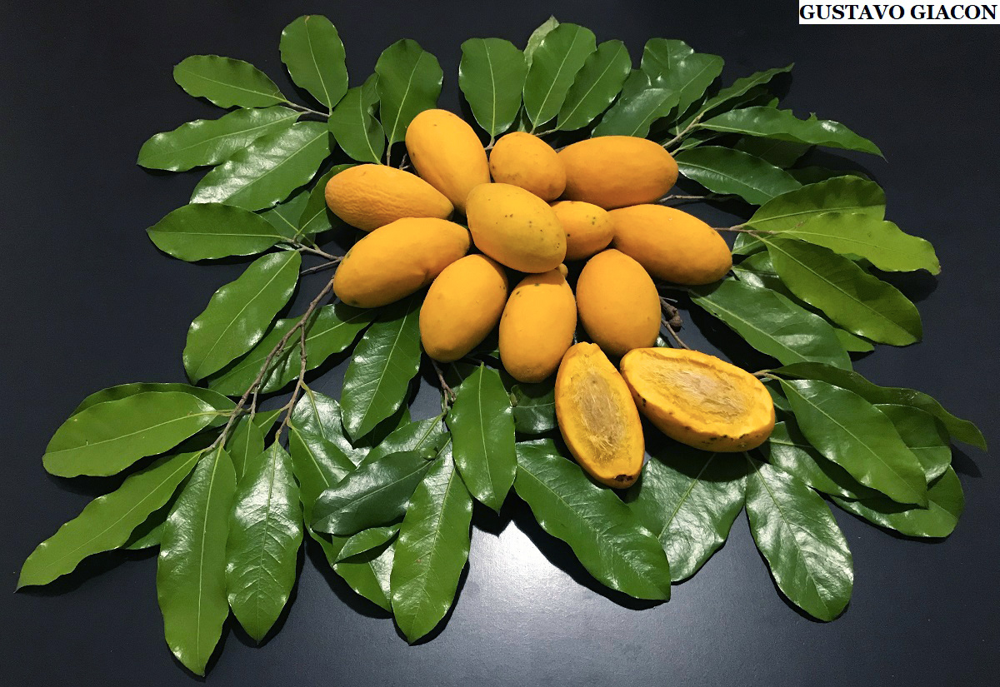
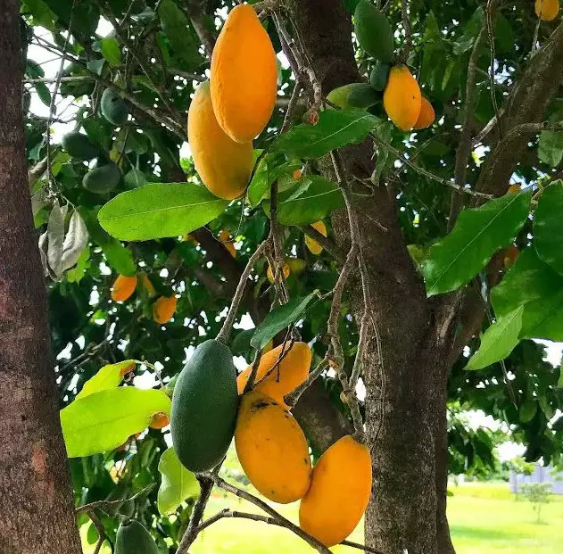
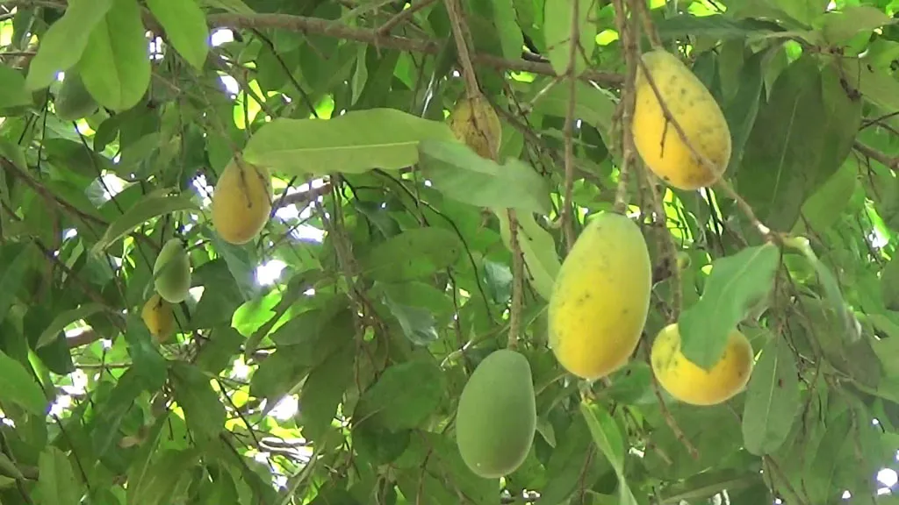

Oiti
Espécie originária da Mata Atlântica, popular nas áreas urbanas, é muito utilizada na arborização de várias cidades brasileiras do Nordeste e outras diversas regiões do país. Seu mastro tem madeira resistente, de enorme permanência, aconselhável para a construção civil, estacas, postes, dormentes, construções de paquetes e vários outros usos.
Seu fruto é uma drupa elipsoide ou fusiforme, de casca enrugada marrom escuro quando madura, com cerca de doze a dezesseis centímetros de comprimento e com caroço volumoso e oblongo. A polpa é doce, pastosa, "areiada" feito uma pinha, enjoativa. Apresenta coloração amarela atraente, e a polpa tem uma cor de ocre puxando para o amarelo fosco. A fachada do tronco tem pigmentação acinzentada e o caule (distância do solo às primeiras ramificações do tronco) é moderadamente curto em relação ao tamanho da copa. As infrutescências são distintas e ocorrem em tons de creme, parcialmente ocres.
Nos ciclos chuvosos e de temperatura estável, pintas foliares arredondados como meio claro, despreza seu valor paisagístico. A mesma se dissemina através de sementes e possui grande eficácia de resistência a locais com excesso de monóxido de carbono expelido pelos veículos. É uma planta acumuladora de silício (50% do tronco é composto por SiO2) e suas cinzas são utilizadas pelos indígenas brasileiros para a confecção de utensílios de argila visando prevenir rachaduras nas peças.
Propriedades
Este trabalho trata da avaliação das características morfológicas e da densidade das palhas provenientes das folhas da palmácea Bactris inundata Martius. A densidade básica das folhas de tucum (Bactris inundata) apresentou-se bastante uniforme no momento da sua determinação, tendo sido observado um valor médio de 0,342 g/cm³. Bactris inundata apresentou duas fibras diferenciadas pelas suas características morfológicas. Uma, com comprimento médio de 0,69 mm, largura de 10,56 µm, lume de 2,63 µm e espessura da parede de 3,97 µm, classificada como curta; outra, com comprimento médio de 2,33 mm, largura de 7,66 µm, lume de 1,85 µm e espessura da parede de 2,91 µm, classificada como longa.
A fibra "A" de Bactris inundata apresentou um baixo coeficiente de flexibilidade (25,12%) e um razoável índice de enfeltramento (66,85). A fibra "B" de Bactris inundata apresentou um baixo coeficiente de flexibilidade (24,09%) e um altíssimo índice de enfeltramento (313,59). As relações entre as dimensões das fibras indicaram que estas podem ser utilizadas na produção de papel kraft com bons índices de resistência físico- -mecânica em algumas de suas propriedades.
As flores
É muito usada na arborização urbana por sua copa frondosa, que dá ótima sombra, o que impacta positivamente sobre o meio urbano no período de verão. Também é capaz de ser admitida em reflorestamentos, regeneração de áreas deterioradas ou como bioindicadora. Esta particularidade proposta à algumas alterações foliares, podem viabilizar informações sobre a qualidade do ar em espaços urbanos. O oiti é eficiente também no biomonitoramento passivo.As folhas são muito apreciadas pela fauna em geral. A sua madeira é de excelente propriedade para inúmeras práticas, como produção de postes, moirões, travessas e construções civis. Seus frutos são comestíveis, com amêndoas ricas em graxa. Algumas narrativas informam que o fruto lembra o paladar da manga. A sua polpa seca pode ser manipulada como incremento de numerosos inténs alimentícios.